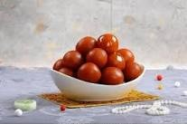
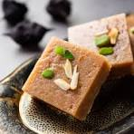

Gulab Jamun
Ingredients
- 1 cup Milk Powder
- 1/4 cup All-Purpose Flour (Maida)
- 1/4 tsp Baking Soda
- 2 tbsp Ghee (Clarified Butter)
- 4-5 tbsp Milk
- 1 cup Sugar
- 1 cup Water
- 3-4 Cardamom pods
- Ghee or Oil
Recipe
- First, make the sugar syrup by boiling 1 cup of sugar, 1 cup of water, and the cardamom pods for 5 minutes. Set aside.
- In a bowl, mix the milk powder, all-purpose flour, and baking soda. Add the 2 tbsp of ghee and mix.
- Slowly add milk, one tablespoon at a time, to form a soft, smooth dough. Do not knead it.
- Shape the dough into small, smooth balls with no cracks.
- Deep fry the balls in ghee or oil on low heat until they are golden brown all over.
- Drain the fried balls and immediately drop them into the warm (not hot) sugar syrup. Let them soak for at least 1-2 hours.

Barfi
Ingredients
- 3/2 cups Milk Powder
- 1/2 cup Powdered Sugar
- 1/4 cup Ghee (Clarified Butter)
- 1/4 cup Milk
- 1/2 tsp Cardamom Powder
- Chopped Pistachios (for garnish)
Recipe
- Heat ghee in a non-stick pan on medium heat. Add the milk and bring it to a boil.
- Reduce the heat to low and gradually add the milk powder, stirring continuously to avoid lumps.
- Add the powdered sugar and cardamom powder. Mix well and cook until the mixture thickens and starts to leave the sides of the pan.
- Pour the mixture into a greased tray or plate and spread it evenly. Garnish with chopped pistachios.
- Let it cool completely, then cut into squares or diamonds.
